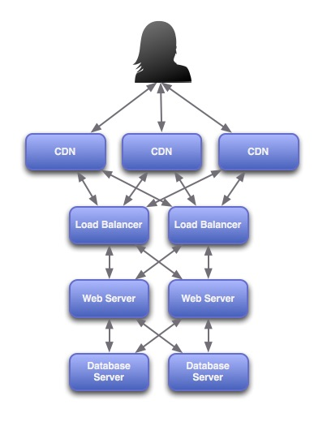
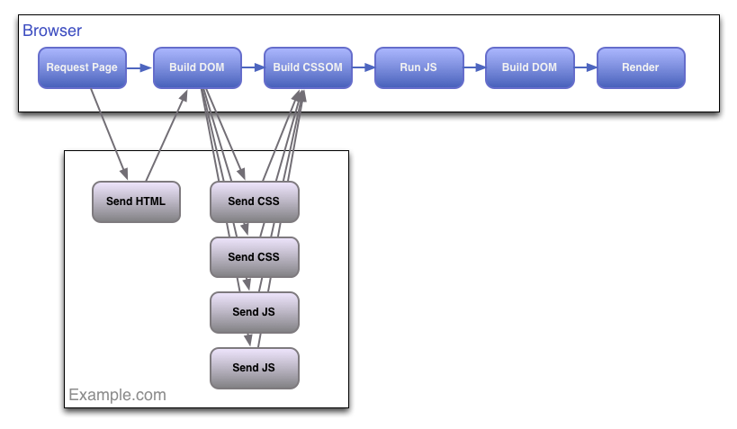
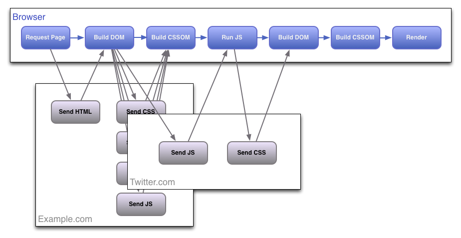
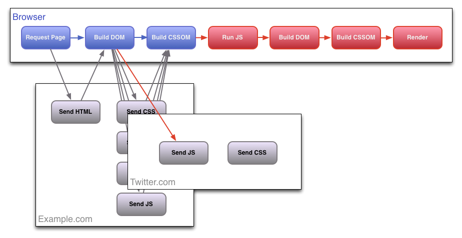
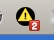
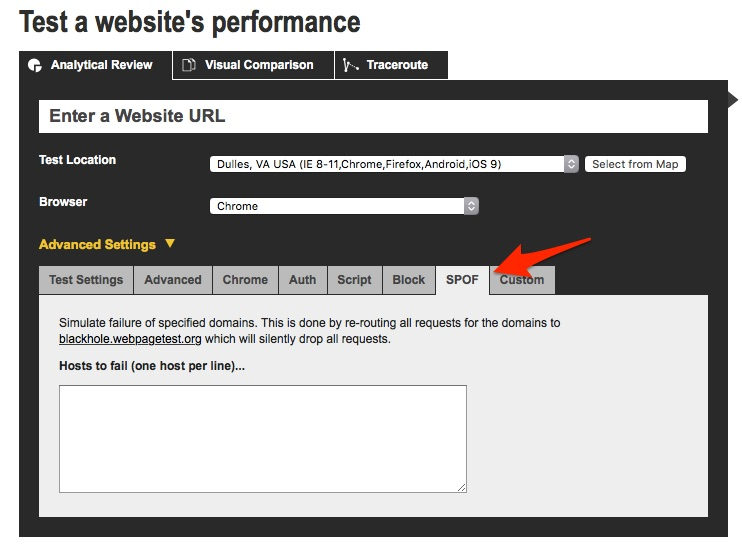
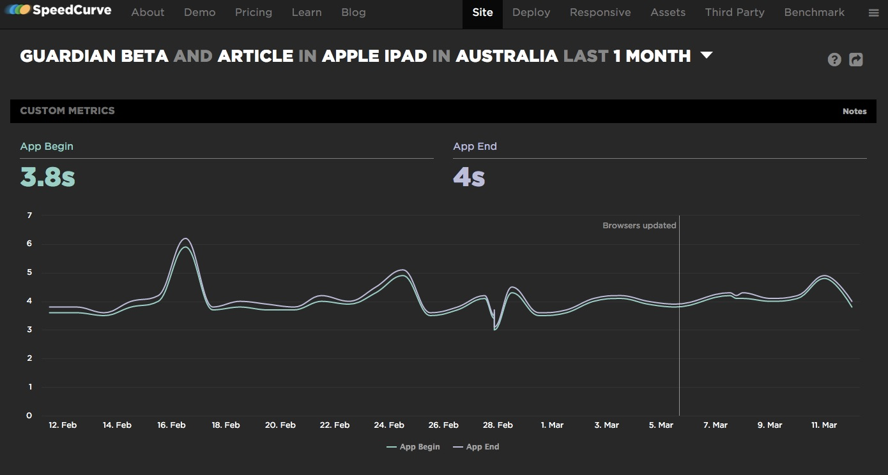

Frontend SPOF
By: Cash Williams / @cashwilliams
Single Point of Failure
A part of a system that, if it fails, will stop the entire system from working.
SPOF IRL
SPOF typically easy to identify.
Chains.
SPOF IRL
SPOF typically easy to identify (for the most part).SPOF on Web
The Web is built to withstand failure.
High Availability
High Availability

Frontend SPOF
How web browsers work...
Browser Render Flow
Tweet It!
Tweet It!
We add some javascript at the top...
<script src="https://platform.twitter.com/widgets.js"></script>
And some HTML in the page...
<a class="twitter-share-button" href="https://twitter.com/[...]">Tweet</a>
Browser Render Flow
Frontend SPOF
Frontend SPOF Twitter Video
Tell the Browser
"These items are not important."
Async Attribute on Script Tag
HTML5 only
<script async src="https://platform.twitter.com/widgets.js"></script>
Asynchronous Loading JS
Pre-HTML5
<script>window.twttr = (function(d, s, id) {
var js, fjs = d.getElementsByTagName(s)[0],
t = window.twttr || {};
if (d.getElementById(id)) return t;
js = d.createElement(s);
js.id = id;
js.src = "https://platform.twitter.com/widgets.js";
fjs.parentNode.insertBefore(js, fjs);
t._e = [];
t.ready = function(f) {
t._e.push(f);
};
return t;
}(document, "script", "twitter-wjs"));</script>
Lastly, Put it at the Bottom
Browser will try to render everything until the point it gets blocked.
Testing for Frontend SPOF
SPOF-O-Matic

- Test locally in Chrome.
- Simulate blocked 3rd Party sites.
- Provides link to next tool...
WebPageTest.org

- Test remotely using different browsers.
- Blocked list of 3rd Party sites.
- Produces video and waterfalls.
Blackhole.WebPageTest.org
Test locally with Hosts file:
72.66.115.13 platform.twitter.com
(Just don't forget to take it out.)
spofcheck
$ npm install -g spofcheck
- Test locally or CI with CLI.
SpeedCurve
SpeedCurve is a cloud SaaS that monitors your site's frontend performance.
